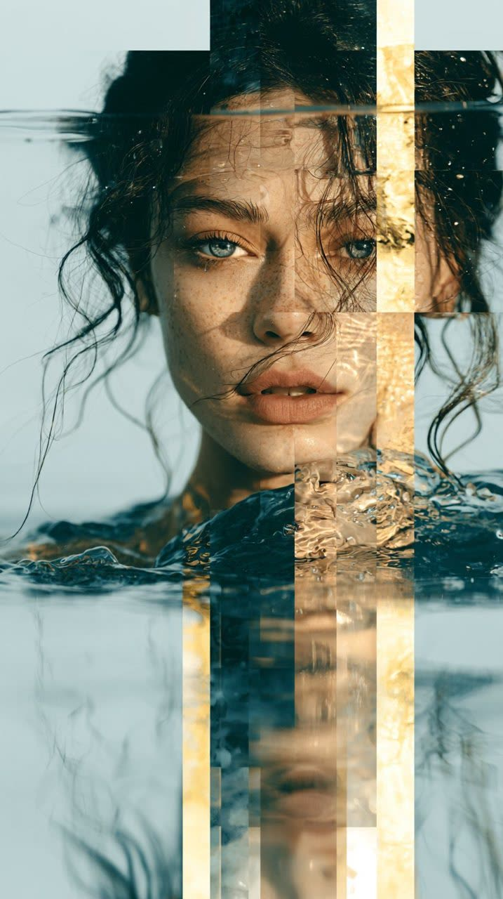

"Golden fractures" sref
AES-012Aesthetic / GenreMidjourney V8by Carolina Delgado (@carolletta)2026-10-06

Midjourney V8 style reference that slices portraits into strips and patches of gold leaf; shown on water/wind scenes.
Prompt
I love golden fractures Midjourney V8 Sref Style Share @midjourney This sref slices portraits into strips and patches of gold leaf, laid over soft sea blues and wet, windswept hair. It feels like a fashion editorial that has been cut up and gilded. --stylize 1000 pushes the look hard, --weird 10 adds small surprises and --chaos 20 keeps the four takes different from each other. Tip: keep the prompt simple and let the sref do the work. Water and wind scenes catch the gold beautifully. artistic surreal image, grand master shot, a woman showed in a particular way --chaos 20 --ar 9:16 --sref 4106519839 --raw --stylize 1000 --weird 10 Which one is yours?
Tags: sref, gold leaf, surreal